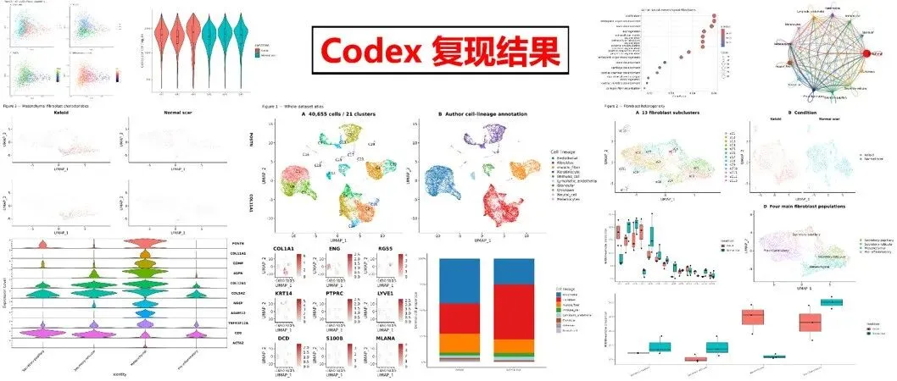
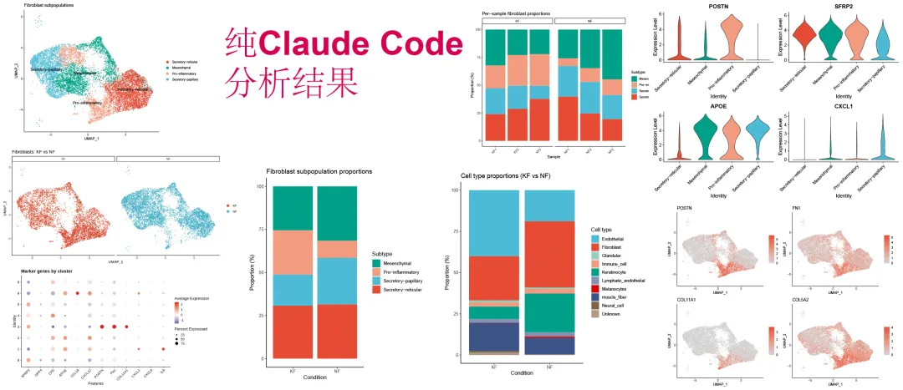
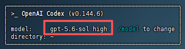

Codex复现单细胞论文实测（基于gpt‑5.6‑sol high）
原文：https://mp.weixin.qq.com/s?__biz=MzAwMzIzOTk5OQ==&mid=2247541384&idx=1&sn=483a12dca401717fce52e6c608149851&chksm=9b3c5bd8ac4bd2cefa8fabd7fb5b4e695e6a2edb2f6a04956370f041eb344259f5f71f5fb470#rd 合集：AI时代，不用就会被淘汰
一、Codex vs. Claude Code/DeepSeek
1、直接上结果比对图：

vs.

vs.
vs.
我们用作R语言scRNA-seq文献复现专题教学的人工复现结果：

之前我们测试过：试试D老师的单细胞代码分析能力怎么样和claude code复现单细胞文章，这次我们在codex中输入相同的指令“我希望复现GSE163973数据集对应来源文章的全部单细胞分析相关内容，请在本地运行并给我输出图表和代码”，结果图呈现见上图。
2、聊聊感受
实际使用下来，codex零交互，使用下来很丝滑，比之前的D老师和Claude code的交互明显少了很多很多。codex（gpt‑5.6‑sol high）跑完全相同的GSE163973复现指令，同样做到了全程零交互，丢完一句指令就放手交给终端自主跑任务，不需要人中途介入确认、补提示。整套流程里它会自动下载数据集、搭建目录结构、逐段生成执行脚本，本地运行、调试报错、迭代修正分析代码，最后输出整套工程文件与绘图结果，不需要我做任何手动干预。
但代价就是token账单直接冲到￥40+。虽然不需要我来回对话，可它每完成一个分析节点就会输出大段的进度汇报，“已完成数据下载”“QC 质控完成”“归一化处理结束” 这类流水日志源源不断往外吐；每一轮agent循环都会把全部历史日志、完整代码、程序报错全部塞进输入上下文，又没有缓存折扣，叠加sol 本身输出定价偏高，再加上深度推理模式内部大量思考token默默消耗，即便没有人和它聊天，token也在疯狂燃烧。简直是吞金兽啊！！！大家是不是也遇到这种情况呢？可以分享一下我们探讨探讨~
三个AI工具输出的图片，与原文相比各有差异。画风和配色有些出入，图片展示方式也有区别。相同的指令下，为什么差异这么大呢？这个与使用不同中转API有关，也和各个AI工具运行内核有关，还有可能和运行时间段有关。
时间上，codex输出结果比claude code更快更多，评论区有没有同时用过三种AI工具的同学，可以结合自己的使用经历上票了：
如果需要Codex、Claude Code在服务器中代为部署，也欢迎联系客服微信[Biomamba_zhushou]聊聊
二、使用过程与结果
演示一下Codex复现单细胞文章流程，本文的输出代码和工程文件下载链接：
通过网盘分享的文件： https://pan.baidu.com/s/1dhyI-W5-JXkylFnfPMpNJg
提取码，联系客服微信[Biomamba_zhushou]领取
此时输入codex，显示的内核就是，然后在光标处输入你的需求并回车就可以啦。

我们来看一下codex的输出结果：